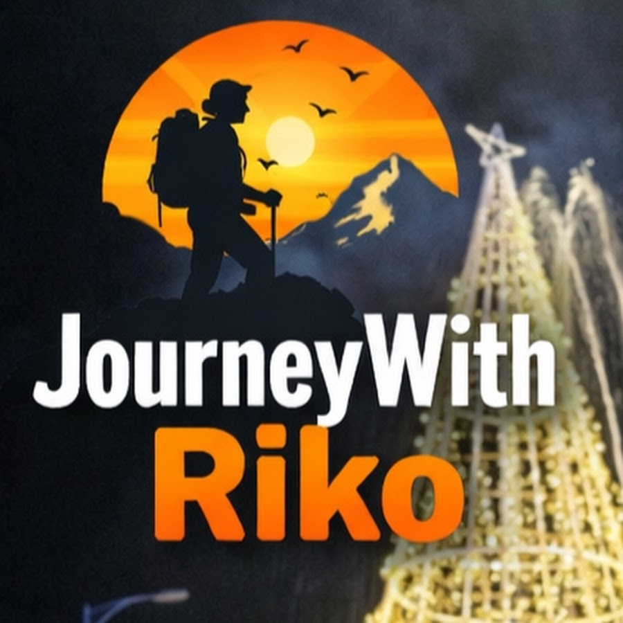
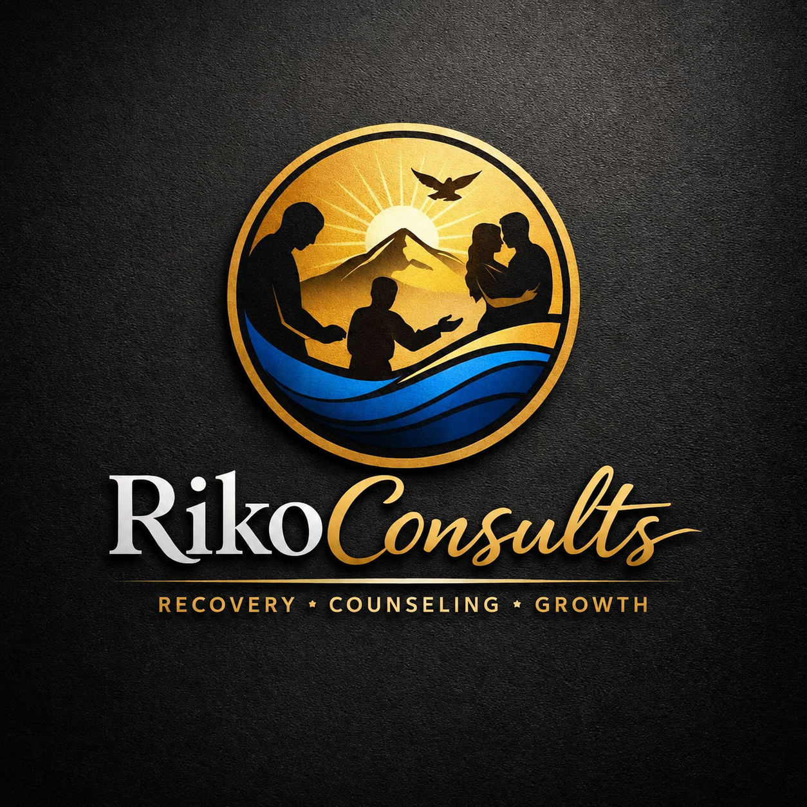

Recovery
The 12 Steps, sobriety, and the real work of rebuilding a life.

JourneyWithRiko Join the community ↗
Recovery • Counseling • Growth
A place for honest conversations about addiction, recovery, personal growth, and the courage it takes to begin again.
JourneywithRiko is a community founded by Riko, A Recovery Support Professional And Also A Person In Recovery. This community aims to support people through their recovery journey, providing a safe space for sharing experiences, learning, and finding hope. Whether you're facing addiction yourself, supporting someone, or simply here to learn, you're welcome here.
This is a space to ask questions, share stories, find encouragement, and remember that recovery is possible — one step at a time, without judgment.
Every journey starts with a single step.
There is hope, there is growth, and there is always another way forward.
Through JourneyWithRiko and Addictopydia, we explore the realities of addiction and the possibilities of healing through personal stories, practical insight, expert conversations, and motivational content.
The 12 Steps, sobriety, and the real work of rebuilding a life.
Honest experiences from people who know the journey firsthand.
Tools, conversations, and motivation for becoming who you want to be.
STAY CONNECTED
Find Riko everywhere.
Follow the platforms that speak to you and become part of the conversation.